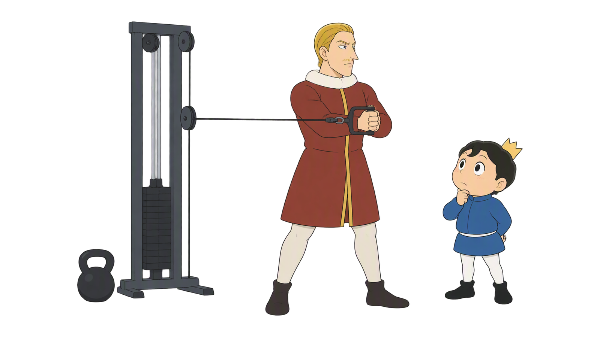
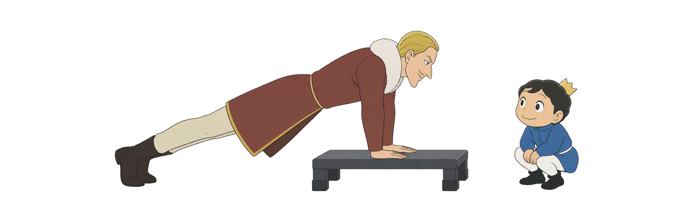
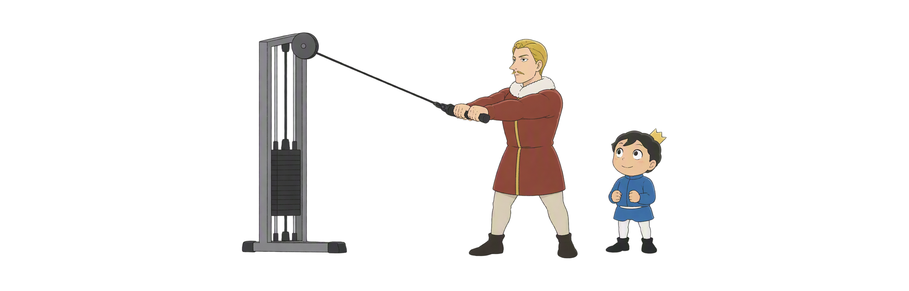
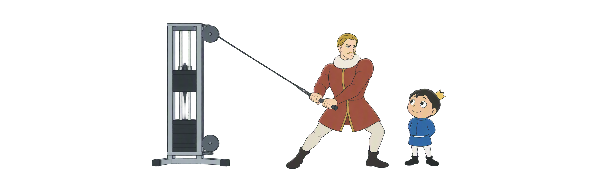
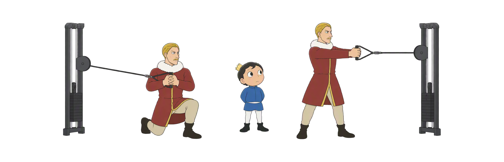

Day 44
核心练习不只卷腹
先抵抗外力，再加入行走与对角线 平板 × Pallof × 农夫行走 × Chop／Lift
抗伸展与抗旋转单臂负重PNF对角线

先抵抗外力，再加入行走与对角线 平板 × Pallof × 农夫行走 × Chop／Lift
六个动作入口，把外力、呼吸和进阶放在同一套检查里；每项都以可控制的位置为先。
肋骨骨盆同稳 · 不塌腰
侧方拉力 · 不跟着转
不向负重侧歪 · 步伐稳
负荷贴近 · 髋部配合
高低对角线 · 回程可控
一次一变量 · 能呼吸
图示用于理解动作关系；疼痛、头晕、憋气、把手回弹或明显失控时，先停止并退回简化版本。
只做三件事：选稳的版本→摆成一线→做3次呼吸。稳了才加难；一散就立刻退回。

侧方绳索想拉动躯干旋转；推出与收回时，先让胸廓和骨盆保持方向。

单侧负重会考验侧屈和旋转控制；先看肩、骨盆和步伐，而不是先追求重量。
负重任务中维持可控制的躯干，不等于让脊柱永远不动。
高到低的Chop、低到高的Lift借用PNF对角线思路；它们先练稳定，再加范围和速度。

从短时稳定到四肢移动、行走和对角线；一次只改一个变量，呼吸始终保留。
